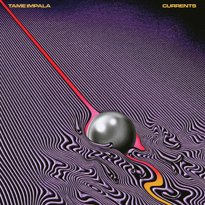

About the Album
"Currents" is the third studio album by Tame Impala, released in 2015. Kevin Parker wrote, performed, produced and mixed it almost entirely on his own, trading the band's fuzzy psychedelic guitars for lush synths, disco grooves and R&B influences. A breakup record about personal transformation, it includes fan favourites like "Let It Happen" and "The Less I Know the Better", and Rihanna later covered "New Person, Same Old Mistakes".
Tracklist
- Let It Happen
- Nangs
- The Moment
- Yes I'm Changing
- Eventually
- Gossip
- The Less I Know the Better
- Past Life
- Disciples
- 'Cause I'm a Man
- Reality in Motion
- Love/Paranoia
- New Person, Same Old Mistakes